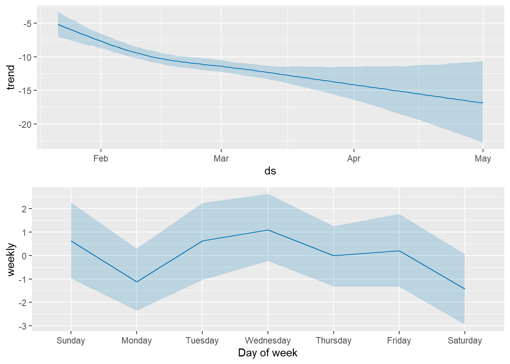

Tracking President Trump’s First 100 Days Approval Rating
As part of its First 100 Days Challenge, the Monkey Cage blog asked the Good Judgement Open, “What will President Trump’s approval rating be on April 28, 2017?” From the question information:
President-elect Trump’s net approval rating has improved since his election in November (Gallup). This question will be resolved by subtracting President Trump’s disapproval rating from his approval rating using the “Gallup Daily” Trump job approval rating. Gallup is tracking President Trump’s job approval ratings here: (Gallup).
Setting a Prior
For an uninformed prior, up to 100% of the population can approve of the President, and likewise 100% can disapprove. This means that valid net approval ratings span from -100 (everyone disapproves) to 100 (everyone approves). The span of -15 to 15 covers 30 of those 200 points, so if we assume that net approval ratings are pulled from a uniform distribution, we should expect to fall in that range with a frequency of around \(30/200=.15\).
However, this is a poor estimate for a lot of reasons. For one, in general, about half the country is going to disapprove of the President and about half the country will approve of the President. So the distribution of net approvals should have central tendency metrics (mean, mode) fairly close to 0. So, a better prior would come from a normal distribution with a mean of zero. Unfortunately, I don’t see a reasonable strategy to estimating the standard deviation (which we need to fit to a normal distribution properly), because we really don’t have much historical data about net approval ratings. I could take a guess, but I have a better idea. Let’s take a look at some historical approval ratings. For example, here are Barack Obama’s approval ratings over his two terms:

(Again, note that these are approval ratings, not net approval ratings. Gallup only launched the daily net approval rating for the Trump administration. However, since the net approval is the difference between Approval and a metric that is necessarily inversely proportional to it, looking at raw Approval ratings is still pretty instructive.)
As we can see, there are long term curves in the approval rating, but lots of day-to-day noise. For an even more dramatic perspective on this phenomenon, check out George W. Bush’s approval ratings over his two terms:

Here we can see President Bush enjoying a modest honeymoon period, followed by a huge jump on 9-11. From there, his approval began to degrade again until March 1, 2003, when he launched the US invasion of Iraq, causing another small spike in popularity. Everything else was a long, slow roll down the hill. We can point out these phenomenal changes because they were unusual. From day-to-day, the changes in approval don’t swing widely across the range of possible approval estimates. If you want to predict the President’s approval rating tomorrow, a decent strategy is to just guess what it is today.
So, what is President Trump’s approval rating today?
Exploratory Data Analysis
library('tidyverse')
library('xml2')
# Let's parse the data directly from the Gallup Visualization's data feed:
# Please excuse this XML hacking.
viz <- read_xml('http://news.gallup.com/viz/v1/xml/ad26ce43-218c-4a42-82de-ce878fa6d119/POLLFLEXCHARTVIZ/TRUMPJOBAPPR201617.aspx?') %>%
xml_child(3) %>%
xml_child() %>%
xml_child(3) %>%
xml_children() %>%
as_list()
disapproval <- viz %>%
lapply(function(el){el$p}) %>%
flatten() %>%
as.double()
approval <- viz %>%
lapply(function(el){el[2]$p}) %>%
flatten() %>%
as.double()
n <- 58
date <- ymd("17/01/21") + 1:n
ratings <- tibble(date, approval = approval[1:n], disapproval = disapproval[1:n]) %>%
mutate(net_approval = approval - disapproval)
ratings %>% tail(1) %>% kable()| date | approval | disapproval | net_approval |
|---|---|---|---|
| 2017-03-20 | 39 | 56 | -17 |
Not great. If we guess that the President’s approval rating will be what it is today, it’s definitely below the -15:15 band. How’s he been doing?
library('plotly')
plot_ly(ratings, x = ~date, y = ~net_approval, name = "Net Approval", type = 'scatter', mode = 'lines')Not good at all. It seems President Trump has skipped the honeymoon and dived straight into the -10’s doldrums which plague Presidents late in their terms.
To take a simple frequentist approach, let’s just count the number of times his approval rating has fallen in each band.
library('pander')
library('tidyr')
temp <- ratings %>%
mutate(band = if_else(net_approval >= -15, "middle", "lower")) %>%
group_by(band) %>%
summarise(number = n()) %>%
spread(band, number)
pander(temp)| lower | middle |
|---|---|
| 5 | 53 |
OK, so let’s say that lower-band probability is something like 0.09 and the middle-band probability is 0.91, and the high-band probability is very small.
I strongly dislike probability estimates of 0 and 1, so instead of saying the high-band probability is zero, I’m going to invoke the rule of three. The probability that the net approval is more than +15 is probably less than 0.05. This is curious, as it implies the low-band and high-band probabilities are similar, despite the fact we’ve observed low-band outcomes and have not observed high-band outcomes. So, in the interest of preserving my tiny bias against absolute certainty, I’ll call the high-band probability 1% and deduct it from the middle-band.
At this point, this is probably a pretty good basis for a GJO forecast. But can we do better?
Real Forecasting
The “forecast” we computed above is a simple estimating of a probability distribution over outcomes for a single point. In Data Science Parlance, however, “forecasting” refers to something related but more general. Forecasting typically means to infer trends based solely on cyclicalities in the data. Data we care about tends to vary regularly across times of day, day of week, month of year, etc. If there’s a long-term trend in these data, we may be able to catch wind of it by pitting our net approval data against an off-the-shelf forecasting tool. There’s a whole class of interesting statistical tools to do this (ARIMA is prehaps the most recognizable). Since it’s shiny and new, let’s try out Facebook’s whiz-bang new time-series tool, Prophet.
library("prophet")
temp <- ratings %>%
select(-approval, -disapproval) %>%
dplyr::rename(
ds = date,
y = net_approval
)
m <- prophet(temp, yearly.seasonality = F, mcmc.samples = 100)
future <- make_future_dataframe(m, periods = 100-n)
forecast <- predict(m, future)plot_ly(forecast, x = ~ds, y = ~yhat_upper, name = "Upper bound", type = 'scatter', mode = 'lines') %>%
add_lines(y = ~yhat, name = "Estimate") %>%
add_lines(y = ~yhat_lower, name = "Lower Bound") %>%
add_lines(data = temp, y = ~y, name = "Actual")So, Prophet believes that President Trump’s approval is degrading basically linearly. More specifically…

…From these component plots we can see than there’s a recurring weekly pattern (it seems Sundays and Wednesdays are the best for the President), superimposed over a linear decrease. If you cut the plotly graph above into week-long chunks, you’ll see that they all follow this day-of-week trajectory.
Scoring the Prophet
In the Good Judgement Open, one doesn’t really get credit for the binary accuracy of their forecasts. Rather, one is rewarded for minimizing error. So, let’s measure Prophet’s error. To do this, I’m going to use Mean Absolute Error, which is just the arithmetic mean of the absolute value of the differences between the estimates and the empirical values.
| MAE |
|---|
| 2.744 |
So, on average, the Prophet estimate has been off by about 2.74 points. It’s interesting to note that this is really close to Gallup’s own 3-point margin of error, so refining these predictions for higher accuracy doesn’t make a lot of sense.
Crunching out an Estimate
Let’s start again with the base frequency-derived estimates: High ~1%, Middle 93%, Low ~5%. How should I update based on Prophet’s estimate? Well, in all honesty, I don’t know exactly. I don’t know the distribution from which Prophet draws its outcomes (I’m guessing it’s normal). But I don’t believe Prophet has much to find with the amount of data available yet. I could assume the distribution is normal and update my estimates using Bayes’ formula, but the conclusion would be that the low- and middle-band probabilities are both large (>10%), and the high band probability is tiny. But maybe there’s a refinement to our approach which could help.
Forecasting non-derived Signals
This is a slightly weird forecasting problem, as we’re trying to forecast the outcome of a metric which is derived from two distinct-but-highly-correlated metrics: approval, and disapproval.
model <- lm(approval ~ disapproval, data = ratings)
ratings %>%
plot_ly(x = ~disapproval+runif(n,-.3,.3), y = ~approval+runif(n,-.3,.3), type = "scatter", name = "Observations") %>%
add_trace(x = ~disapproval, y = ~fitted(model), mode = "lines", name = "LM")| Estimate | Std. Error | t value | Pr(>|t|) | |
|---|---|---|---|---|
| (Intercept) | 75.24 | 2.029 | 37.08 | 4.25e-41 |
| disapproval | -0.6381 | 0.03891 | -16.4 | 4.814e-23 |
| Observations | Residual Std. Error | \(R^2\) | Adjusted \(R^2\) |
|---|---|---|---|
| 58 | 0.7884 | 0.8277 | 0.8246 |
[Note that these points are jittered because scatterplots of integers tend to overplot.]
So, perhaps we can do better by forecasting each, and then deriving the net approval from the forecast. There are good reasons not to do this! Think of a model as an engine. You feed it gasoline (empirical data) and it does work (good predictions), but with an undesirable side effect–it also emits toxic gas (error). By adding a second engine, we may produce twice as many predictions (which doesn’t actually help us), but we’ll also have two error generators (which actually hurts us).
That said, the two streams aren’t perfectly correlated, and this is instructive. One may be acting in a way that is systematically (as opposed to randomly) distinct. Imagine two mobs of people. On the left, people who disapprove of the President. On the right, people who approve of him. Some people will move between the two mobs in response to things that happen. Some people will not. There’s also an amorphous blob of people in the middle who don’t know how they feel, or just don’t feel strongly about the President. Here’s a map of the political blogosphere that somewhat resembles what I’m envisioning:

If people can move between these camps independently (i.e. the decision to move from “approve” to “don’t know” is distinct from the decision to move from “don’t know” to “disapprove”), then maybe forecasting them separately makes sense. Let’s just try it and see.
dApproval <- data.frame(ds = date, y = ratings$approval)
m <- prophet(dApproval, yearly.seasonality = F)
approvalforecast <- predict(m, future)
plot_ly(approvalforecast, x = ~ds, y = ~yhat, name = "Estimate", type = 'scatter', mode = 'lines') %>%
add_lines(data = dApproval, y = ~y, name = "Actual")Here is Prophet’s estimate of the Approval rating. It’s trending downward.
dDisapproval <- data.frame(ds = date, y = ratings$disapproval)
m <- prophet(dDisapproval, yearly.seasonality = F)
disapprovalforecast <- predict(m, future)
plot_ly(disapprovalforecast, x = ~ds, y = ~yhat, name = "Estimate", type = 'scatter', mode = 'lines') %>%
add_lines(data = dDisapproval, y = ~y, name = "Actual")And here is Prophet’s estimate of the Disapproval rating. It’s trending upward. So, now if we combine the two…
temp <- approvalforecast %>%
mutate(approval = yhat) %>%
cbind(disapproval = disapprovalforecast$yhat) %>%
mutate(net = approval - disapproval)
plot_ly(temp, x = ~ds, y = ~net, name = "Estimate", type = 'scatter', mode = 'lines') %>%
add_lines(data = ratings, x = ~date, y = ~net_approval, name = "Actual")We have another estimate. But is it an improvement?
Scoring the Prophet, Round 2
Let’s look at the same scoring metric (Mean Absolute Error) to see if the approval-disapproval models fit the data better than the net_approval model. (The lower MAE indicates a better fit.)
| MAE |
|---|
| 1.807 |
So, approximately a point lower than the single-model approach. At this point, it looks like modeling approval and disapproval separately is probably the better way to go, increasing the fit of the model. Ordinarily, I’d test this with some cross-validation procedure(s), but we’re still working with so little data that cross-validation is difficult.
Extrapolating from these trends, we have a prediction that by the end of the GJO’s question lifecycle, the net Approval rating will be around -20. This, coincidentally, is what we should predict from our very most blunt approach of predicting what today’s value is for every point in the future. Accordingly, we should place a lot of confidence in the lower-band probability, some in the middle band, and almost none in the upper band.
I should be able to derive more precise estimates (i.e. real numbers) from this model, but (again) I don’t know enough about the distribution Prophet outputs, so I don’t know how to properly combine the given margins to estimate the distribution of the estimate for the date in question. Just glancing at the margins suggests that Prophet estimates that the middle band covers the upper 20% of outcomes, so there’s an 80% likelihood that the net approval will be in the lower band. Accordingly, my current estimate for the GJO is Low: 80, Mid: 19, Hi: 1.
This is a bold claim, relative to the GJO consensus:

Here we can see that my estimate and the consensus are approximately opposites between the low and middle bands, while agreeing that the probability of the high band is vanishingly small. I’d normally be much more conservative with my estimate, but…
The Inside View
UPDATE: Validation
Now that this analysis is pushing three weeks old, we’ve collected enough data that I feel good about doing a bit of new-data validation. To start, let’s compare the simple, one-forecast model with reality:
n <- length(approval)
updatedRatings <- tibble(date = ymd("17/01/21") + 1:n, approval, disapproval) %>%
mutate(net_approval = approval - disapproval)
plot_ly(forecast, x = ~ds, y = ~yhat, name = "Estimate", type = 'scatter', mode = 'lines') %>%
add_lines(data = updatedRatings, x = ~date, y = ~net_approval, name = "Actual")Prophet definitely sniffed out a general trend, but it doesn’t look awesome. To see how it did a little more objectively, let’s fall back on the Mean Absolute Error, which was…
MAE <- (updatedRatings$net_approval - forecast[1:n,]$yhat) %>%
abs() %>%
mean()
tibble(MAE = MAE) %>%
pander()| MAE |
|---|
| NA |
Actually not terrible. It’s natural for model metrics to degrade as the model outputs are compared to new data. One mark of a really good model is that the validation metrics converge on the training metrics. But this requires patience, careful handling, lots of data, and a really talented modeler (not to mention a cooperative reality to generate the validation data).
This is nice and interesting, but I based my GJO forecasts on the two-signal model. Thus, the real question is how it has performed. Let’s see:
plot_ly(temp, x = ~ds, y = ~net, name = "Estimate", type = 'scatter', mode = 'lines') %>%
add_lines(data = updatedRatings, x = ~date, y = ~net_approval, name = "Actual")Here we can see slightly better (if positively biased) performance. But is it actually better?
MAE <- (updatedRatings$net_approval - temp[1:n,]$net) %>%
abs() %>%
mean()
tibble(MAE = MAE) %>%
pander()| MAE |
|---|
| NA |
Here we see the two-signal model has degraded a bit more, though it continues to outperform the one-signal model. What this means is that I was right to trust the two-signal model more than the one-signal, but the difference between them wasn’t all that important in retrospect. Based on current trends, it looks like my daring prediction (80% certainty the net approval will fall below -15) was actually underestimating the low-band probability.
Updating the Model
Since I keep concluding that the two-signal model is slightly superior, I’m just going to update that one. Since we have new data to fit, let’s see if Prophet’s extrapolations maintain their general trajectory.
n <- length(approval)
date <- ymd("17/01/21") + 1:n
ratings <- tibble(date, approval, disapproval) %>%
mutate(net_approval = approval - disapproval)
dApproval <- data.frame(ds = date, y = ratings$approval)
m <- prophet(dApproval, yearly.seasonality = F)
approvalforecast <- predict(m, future)
dDisapproval <- data.frame(ds = date, y = ratings$disapproval)
m <- prophet(dDisapproval, yearly.seasonality = F)
disapprovalforecast <- predict(m, future)
temp <- approvalforecast %>%
mutate(approval = yhat) %>%
cbind(disapproval = disapprovalforecast$yhat) %>%
mutate(net = approval - disapproval)
plot_ly(temp, x = ~ds, y = ~net, name = "Estimate", type = 'scatter', mode = 'lines') %>%
add_lines(data = ratings, x = ~date, y = ~net_approval, name = "Actual")Yup! In spite of the new data, Prophet isn’t changing its projection much. It’s more negative than the original, implying a higher confidence for the low-band prediction. However, this highly confident low-band prediction feels wrong to me, which I take to be an important signal. If you don’t share this feeling of wrongness, here’s my intuition: Prophet is basically predicting a linear degradation of about 2.5 points per week. Predicting out to the end of the month may be fine, but extrapolated further gives us the conclusion that the net approval should bottom out at -100 before the end of the year. Beyond that, Prophet predicts impossible values below -100. Accordingly, we should treat this trend with caution.
That said, GJO consensus remains that the middle band is likeliest, though the recent run of low-band days has driven the two to begin collapsing toward one another:

Based on these two conflicting patterns, I’m going to update weakly in roughly equal measure and ultimately stand by my prior estimate of Low: 80%, Mid: 19%, High: 1%.